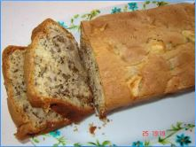

⮜⮜
Cake aux pommes et aux noix
Pour 8 Personnes,
Temps de préparation : 20mn,
Temps de cuisson : 1h,

Ingrédients
- 4 pommes
- 100 g de cerneaux de noix
- 2 oeufs
- 150 g de beurre fondu
- 200 g de sucre
- 1 sachet de sucre vanillé
- 250 g de farine
- 1 sachet de levure
- 1 pincée de sel
Préparation
- Préchauez le four à 180°C soit thermostat 6.
- Epluchez les pommes. Coupez-les en petits morceaux. Hachez les noix.
- Mélangez au fouet le reste des ingrédients, puis incorporez délicatement les pommes et les noix à la préparation.
- Mettez du papier sulfurisé dan un moule à cake. Versez la préparation dans le moule. Faites cuire 1 heure.
- Pour finir, Démoulez quand le gâteau est froid.
Remarques